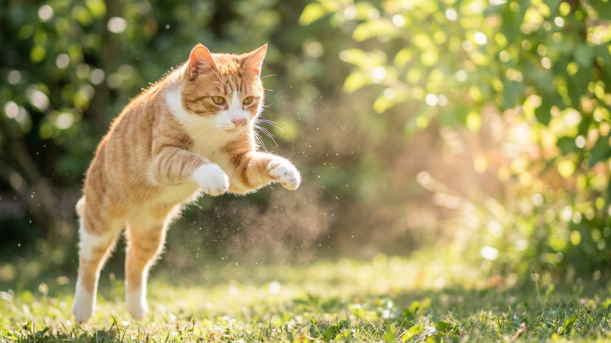

Airedale Terrier — крупнейший из всех терьеров, весом до 30 кг и характером, который не знает слова «подчиняюсь». Он умный, весёлый и самодостаточный — но без чётких правил с первого дня быстро начинает устанавливать их сам. Ниже — всё, что нужно знать до того, как взять щенка: нагрузка, воспитание, тримминг и честный ответ, кому эрдельтерьер подходит, а кому нет.
🐾 Ваш питомец — эрдельтерьер?
Заведите профиль в AnimaLife: приложение запомнит породу, возраст и вес и будет подсказывать по уходу именно для неё. Вопросы AI-ветеринару — круглосуточно и бесплатно.
Завести профиль → Завести в MAX →
У вас iPhone? AnimaLife есть в App Store
Эрдельтерьер — рабочая порода с охотничьим прошлым. Это значит высокую энергию, крепкую нервную систему и природную инициативу. Он не устаёт первым — устаёте вы. Минимальная физическая нагрузка: 2 часа активных прогулок в день, желательно с бегом, апортом или ноузвёрком. Без достаточной нагрузки Airedale находит занятие сам: диван, обувь, цветочные горшки — всё идёт в дело.
Эрдельтерьер обучаем — он входит в топ-25 умных пород по Стэнли Корену. Но ум здесь с самомнением: давление и грубость включают упрямство, а не послушание. Работающие инструменты — короткие сессии (5–10 минут), высокоценное лакомство, последовательность. Команду «сидеть» он усвоит за 3–5 повторений, а выполнять без настроения откажется ровно так же. Базовый курс послушания (OB-1) с щенком до 6 месяцев — не опция, а необходимость.
Главное правило: правила устанавливаете вы, а не пёс. Если позволили один раз запрыгнуть на диван — будет считать это нормой. Мягкие, но жёсткие границы с первого дня.
Жёсткая проволочная шерсть эрдельтерьера требует тримминга — выщипывания отмершей ости вручную или тримминговым ножом. Стрижка машинкой меняет структуру шерсти: она становится мягкой, теряет цвет и защитные свойства. Профессиональный тримминг — 2 раза в год, занимает 3–4 часа. Между сессиями: расчёсывание щёткой раз в неделю, осмотр ушей и подушечек лап.
Эрдельтерьер хорошо уживается с детьми школьного возраста — игривый и крепкий, не обидится на шумную компанию. С другими собаками — нейтрально или дружелюбно при ранней социализации. С кошками сложнее: охотничий инстинкт сохранился, совместное проживание возможно, но требует знакомства с щенячьего возраста.
Порода подходит активным владельцам с опытом содержания собак, семьям с детьми, людям со спортивным образом жизни. Не подходит: новичкам без опыта воспитания, тем, кто большую часть дня вне дома, владельцам мелких грызунов и птиц.
🐾 У вас эрдельтерьер?
AnimaLife соберёт уход под породу: к каким болезням есть склонность, что проверять по возрасту, чем кормить и когда пора к врачу. Бесплатно, прямо в мессенджере.
Собрать план ухода → Собрать в MAX →
У вас iPhone? AnimaLife есть в App Store
🐾 Понравился разбор?
Подпишитесь на канал — каждый день разбираем по одному тревожному симптому у кошек и собак: что в пределах нормы, а когда пора к врачу. Подпишитесь, чтобы не пропустить разбор, который может спасти здоровье вашего питомца.
Материал носит информационный характер и не заменяет очную консультацию ветеринара.